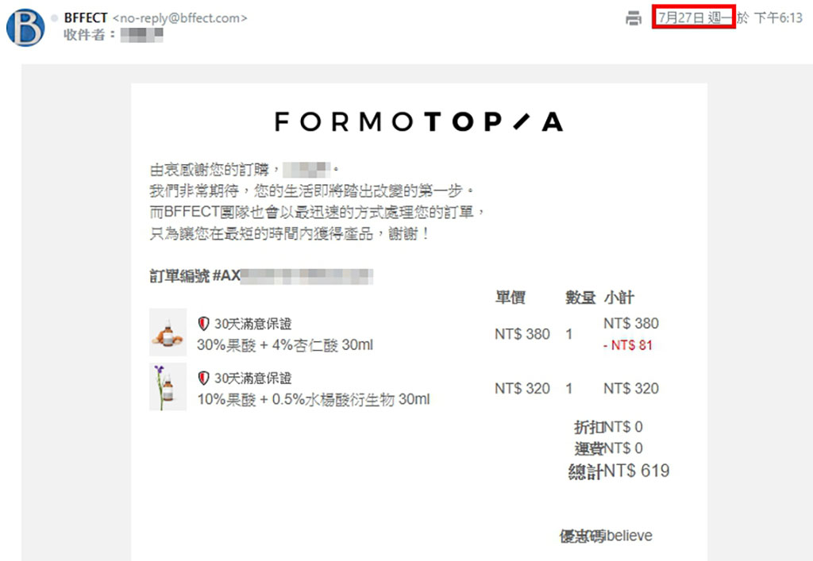
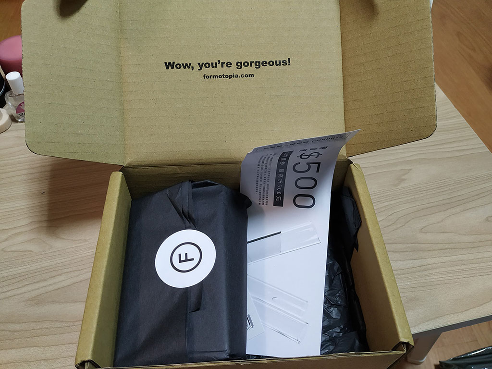
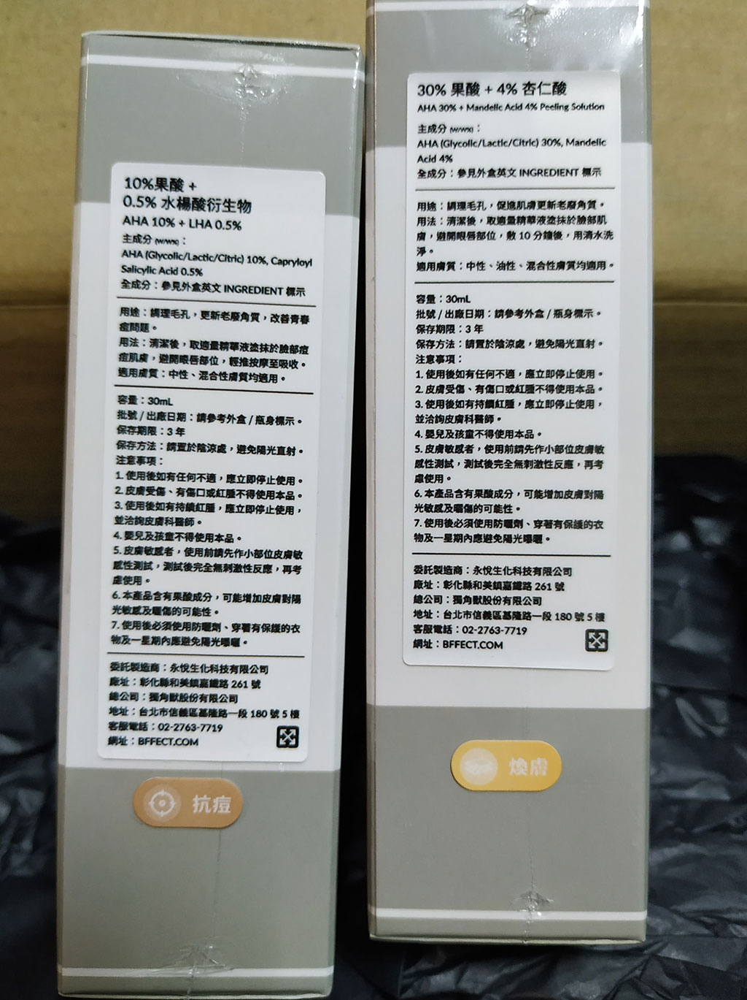

嗨嗨 我好像很久沒有更新了，上個月的時候覺得心情抑鬱，覺得所有事情都做不好，文章也很久沒有動力更新。之所以想要跟大家分享這個，也是因為最近長了很多的痘痘，尤其是下巴，其實我覺得是因為內分泌失調的關係哈哈，之前因為工作上壓力太大，有一陣子也是狂長痘，因為我平時長痘的時候都是生理痘阿，或是辣吃太多火氣比較大，一開始我以為這次也是這樣，擦個茶樹精油過幾天就好了。
不過沒想到過了好幾天，痘痘消的少就算了，還一直狂冒出其他顆，此時我才察覺案情不單純，原來是因為內分泌失調，這種是做棘手的痘痘，因為要短時間讓心情變好不容易啊嗚嗚。
這個時候，剛好我本來的酸類已經用完了，本來在使用的是The Ordinary的水陽花酸，就在考慮是不是要再買一罐，不過我其實是百齡果教徒哈哈哈(不曉得大家有沒有在聽podcast)，他們很久之前就有在葉配這個，之前一直都沒注意，可能是因為最近需要，突然就傳到我的耳朵裡了，上網查了一下，其實他們也有所謂’致敬’負評，然後大家使用的心得其實我也看不出來到底是不是葉配。
不過我考慮了許久，想說還是買買看好了，反正也不貴，然後網站上還主打30天滿意保證活動，就是說30天內用過後不滿意可以退貨啦，不過我覺得就算我用完後不滿意大概也不會退貨，所以就沒有研究了，有興趣的可以自行研究他的細則->30天滿意保證
喔 然後他們好像不定期會有商品打折，所以可以觀望看看再下單，不過我有急用，所以就直接下單我需要的了，不過我用了百齡果的折扣碼:i believe，這個網站是1000免運，用了折扣碼是500免運，雖然我只想買一罐，不過果然還是想要免運費，所以就湊兩罐了。
其實他們的出貨時間比我想像中的慢一點哈哈哈，我可能被現在出貨迅速的一些賣家慣壞了。給大家看看我的訂單資訊，7/27下訂的，那個時候30%果酸 + 4%杏仁酸 30ml剛好在特價，還蠻開心的，不過這罐我目前還沒有使用，用完的話在跟大家分享。

到了7/31的時候才收到了到貨簡訊，當天馬上就去取貨了。
收到後外面的包裝盒
打開來裡面長這樣，看到包裝那麼複雜，突然懂了為什麼不能馬上出貨哈哈

裡面附了一張折價券
跟一張你可以黏在瓶罐上的貼紙，可能是因為罐子上都是英文，怕有人會不小心搞混，所以讓大家可以照著自己的需求去做個紀錄
接著終於是主角啦
外包裝上面也有幫大家貼好功能

今天只有要跟大家介紹其中一罐【10%果酸 + 0.5%水楊酸衍生物 30ml】，因為另一罐是酸濃度很高的，不可以跟其他酸類一起使用，所以我打算等狀況好一點在來使用。
實測
先直接上圖給大家看在來介紹他吧~
我是用小米A2的外鏡拍的，雖然畫質沒很好，不過還是可以看的出來，我本來的下巴真的是很糟，一堆痘痘，加上我的手賤，上班的時候會忍不住一直去摳，整個狀況頗慘，不過擦幾天之後，效果真的是有出來，雖然8/3看起來還是很嚴重，不過我已經有感受到他在好轉了，沒有繼續冒新的痘痘，也沒有繼續發炎紅腫，到了8/12真的是整個都消下去了，剩下的基本上都是我摳出來的痘疤，只能等我持續擦他等代謝了。
接下來給大家看看官網上關於這罐的資訊:
本產品添加由甘醇酸、乳酸、檸檬酸混合而成之中等濃度（10%）AHA複合型果酸。
早晚清潔肌膚後，取適量均勻塗抹於臉部痘痘肌膚處或要改善的肌膚處
建議於化妝水後，乳液前使用，白天使用需搭配防曬商品
＊部分肌膚使用，可能會有輕微刺激感，但如沒有明顯不適反應(如泛紅或是持續的刺痛)，都屬於正常範圍。
＊可每天使用，但建議需觀察肌膚反應，調整使用頻率，部分肌膚可二天或三天使用一次，如是第一次使用果酸產品，可先二天或三天使用一次，待肌膚適應後，再每天使用。
更多詳細資訊
我個人的話是會每天使用他，因為我之前算是蠻習慣酸類的產品了。擦他之前我用的化妝水是靈芝水，然後擦完他後會在擦倩碧的水磁場來加以保濕。
我覺得其實痘痘好轉，可能不只他的功效，是很多因素加在一起的，像是我最近開始運動啊，讓自己的心情好轉阿，因為減肥的關係有改變部分飲食阿等等，然後也是最近開始使用靈芝水跟水磁場的，種種因素加在一起，讓痘痘沒有持續嚴重下去，並漸漸好轉。不過我覺得他依然是功不可沒，如果沒有他的話，可能我要花更多的時間來整治我的痘痘，所以如果有一樣問題的朋友，我覺得這款非常值得一試的。
**以上內容純屬個人實測感受
官網資訊